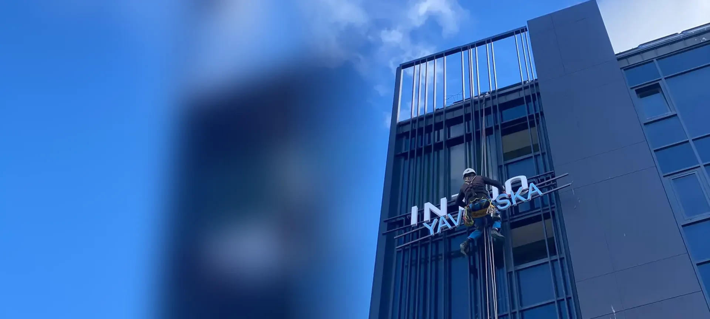
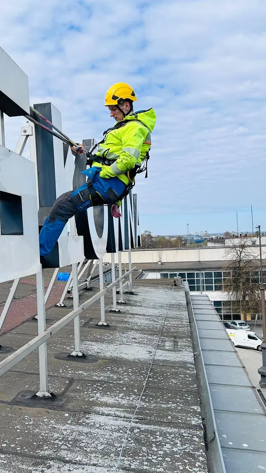
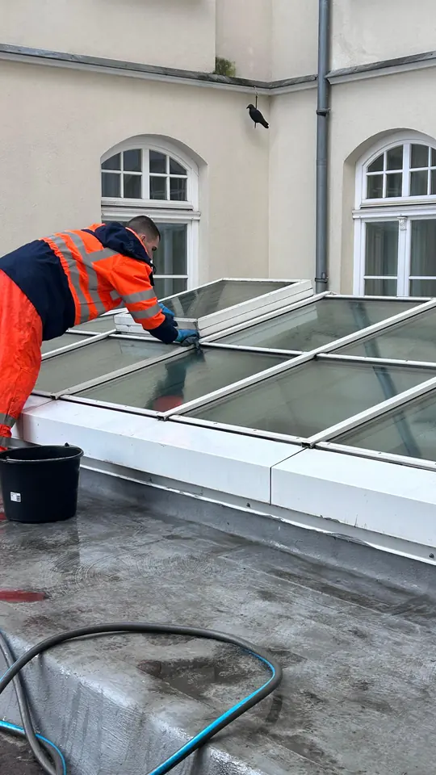
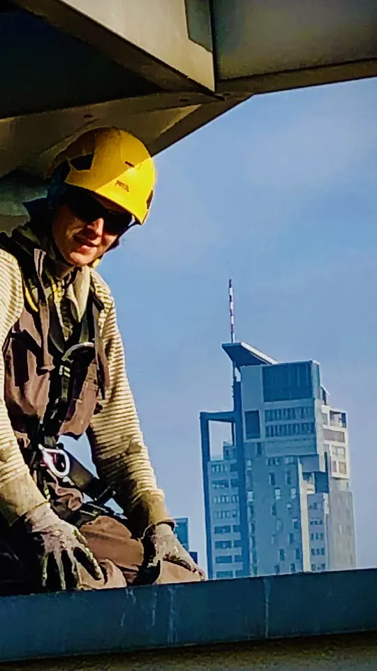

Biurowce
Fasady szklane i okna.
- mycie fasad szklanych
- mycie okien na wysokości
- czyszczenie ram i uszczelek
- mycie cykliczne

Myjemy okna i fasady szklane biurowców, hoteli, apartamentowców i bloków w Gdańsku, Gdyni i Sopocie. Pracujemy z lin, bez podnośnika na parkingu, w godzinach ustalonych z zarządcą. Najemcy pracują normalnie.
Tak rozwiązujemy trzy typowe sytuacje zarządcy budynku.
Szyby, ramy i wszystko, co widać przy okazji.
Fasady szklane i okna.
Przeszklenia, balkony, balustrady.
Okna na klatkach i świetliki.
Elewację widzimy z bliska.
Inne usługi: usuwanie sopli, odśnieżanie dachów, uszczelnianie kominów, mycie elewacji, montaż reklam na wysokości.
Baza w Gdyni, dojazd w całym Trójmieście. Przy pilnych zgłoszeniach zwykle w ciągu 24–48 godzin.
Biurowce w Oliwie, na Przymorzu i w Letnicy, hotele w Śródmieściu.
Oliwa · Przymorze · Letnica · Śródmieście · Wrzeszcz
Biurowce w Śródmieściu i Redłowie, apartamentowce przy morzu.
Śródmieście · Redłowo · Orłowo · Mały Kack
Hotele i apartamentowce przy plaży i w centrum.
Dolny Sopot · Karlikowo · Kamienny Potok
Okolice: dojeżdżamy też do Rumi, Redy, Wejherowa i Pruszcza Gdańskiego. Zobacz: prace wysokościowe w okolicach Trójmiasta.



Stałe terminy mycia, ta sama ekipa i protokół po każdej wizycie. Przy okazji zgłaszamy usterki elewacji, zanim zrobią się z nich szkody.
Zwykle 2–4 razy w roku. Częściej przy ruchliwych ulicach, blisko morza i budów, rzadziej w spokojnej okolicy.
Każda wycena jest indywidualna: zależy od powierzchni szkła, wysokości budynku i dostępu do dachu. Wycenę przygotowujemy zwykle tego samego dnia roboczego.
Tak. Technik pracuje przy szybie ręcznie, bez nacisku maszyn, środkami odpowiednimi do szkła i ram.
Tak. Pracujemy z zewnątrz, a strefę wydzielamy tylko przy wejściu i pod miejscem pracy.
Bezpiecznych punktów do zamocowania lin. Jeśli budynek ich nie ma, sprawdzamy inne możliwości na miejscu i mówimy wprost, czy da się pracować z lin.
Tak. Myjemy świetliki dachowe, balustrady szklane i przeszklenia wejść.
Poradniki dla zarządców: jak często myć okna biurowca, alpinista, podnośnik czy rusztowanie, glony i zacieki na elewacji. Więcej na blogu.
Wyślij zdjęcia elewacji i adres. Przygotujemy wycenę albo harmonogram mycia na cały rok.